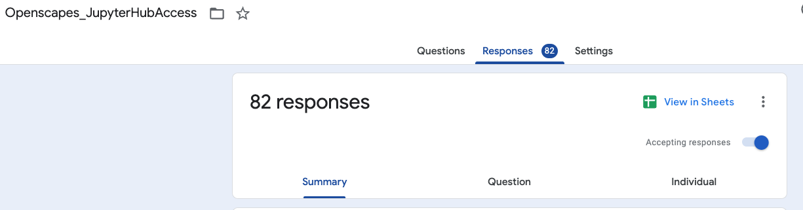
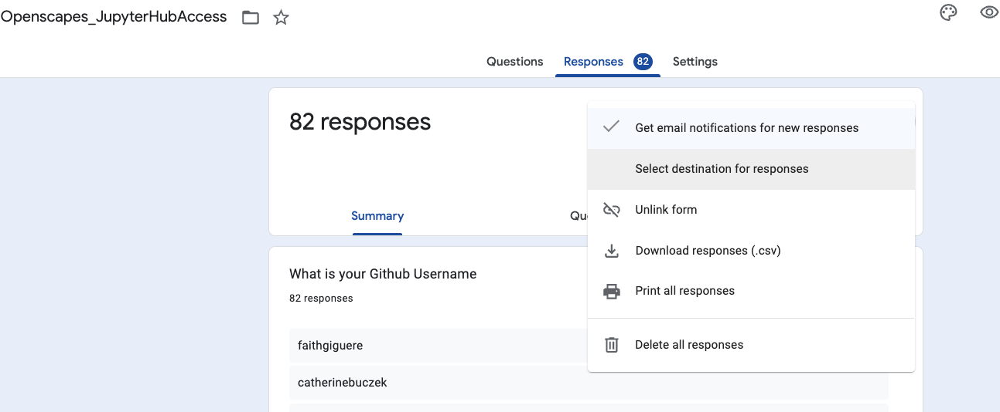
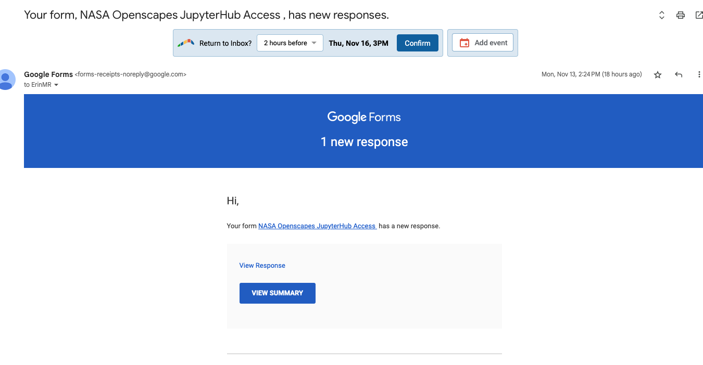
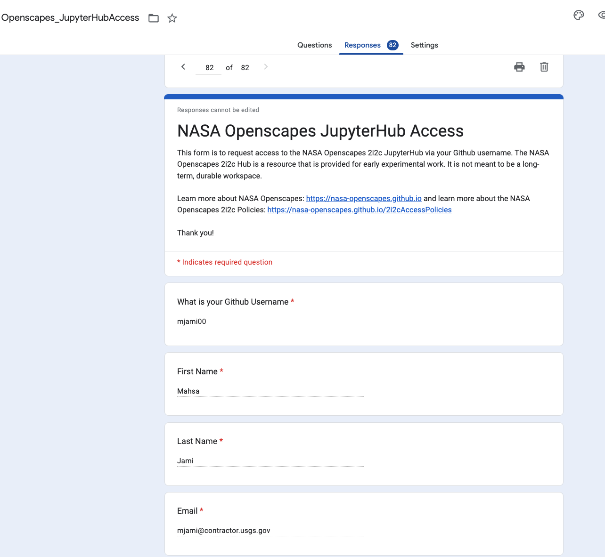
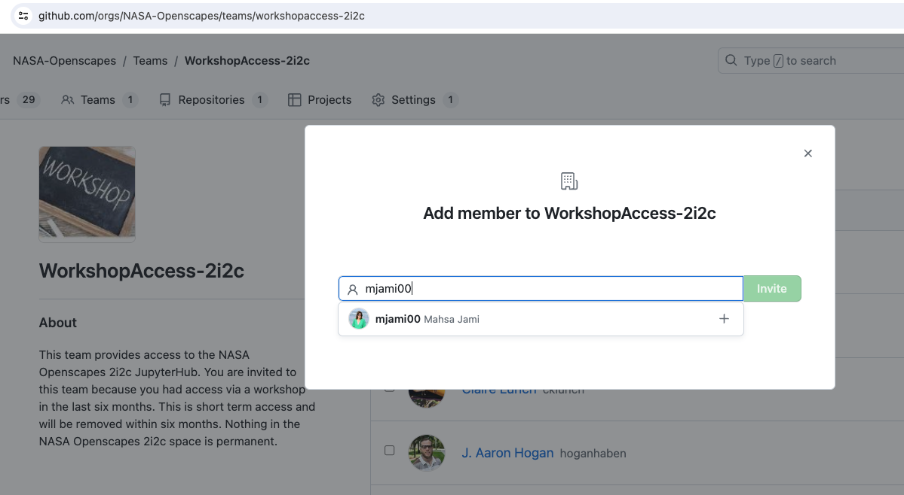
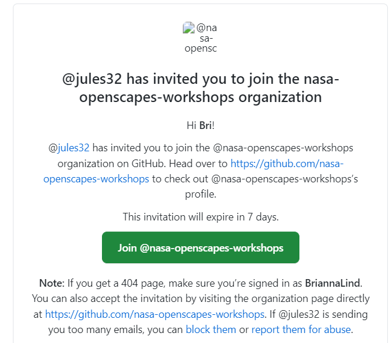
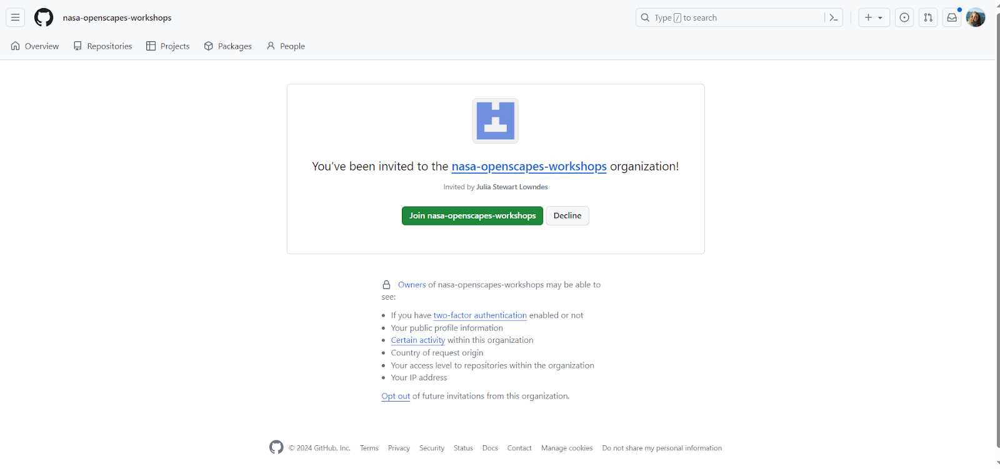
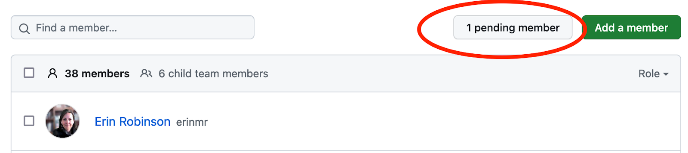

GitHub-based Access
This page is written primarily for workshop leads (mentors and other partners) who are inviting people to the Hub, as a collaborator for developing workshop materials or as a participant.
Individuals are given Hub access by adding them as members of the appropriate team in the relevant GitHub Organization. The most common teams we use to add users are those for long-term access for mentors and core team members in the NASA-Openscapes and NMFS-Openscapes GitHub organizations, and NASA Openscapes Champions in the nasa-openscapes-workshops GitHub organization.
- NMFS-Openscapes Longterm-Access-2i2c team
- NASA-Openscapes LongtermAccess-2i2c team
- NASA-Openscapes-Workshops nasa-champions-2024 team
If you want to add many people to a team at once, for a Champions cohort or for a workshop, jump to instructions for adding people in a batch
Individual long-term access through GitHub Teams
2. Google Form response setup
Set the form responses to notify you by email when there are responses: Click on Responses > click three vertical dots and then check “email notification.”


3. Email alert of new signup
When you get an email click ‘view response’ (not view summary)

If you are not sure if the access request is valid (i.e., the requestor does not appear to be an Openscapes mentor, staff member or close collaborator etc.), ask the mentor community in Slack to verify if the person requesting access is affiliated with any mentors’ work. If not, then send the requestor the following email, and do not add them to the GitHub team:
Dear XXX,
Thank you for your interest in our JupyterHub. Currently we provide access to people who participate in workshops taught by NASA Data Center (DAAC) staff through the NASA Openscapes community. We will be adding upcoming events you can sign up for here: https://nasa-openscapes.github.io/news.
Best,
Note in the “Notes” column in the Google form response sheet that this email was sent denying access, and the date.
4. Copy GitHub username
On the response page, copy the Github Username

5. Add GitHub username to the GitHub Team
If you are adding many new mentors to the long-term access team, you can use the same steps as for adding workshop participants
Go to the appropriate team in GitHub > Click Add member > Paste GitHub username.

GitHub may ask you for 2-factor authentication for the first one you add in a batch, not after that.
People may see invitation notifications in two ways; in GitHub itself, and/or via email. They must accept the invitation to be able to access the Hub. This is what it looks like in their email inbox:

This is what the invitation looks like in the GitHub website interface - clicking the yellow banner notification leads to the invitation:


6. Email confirmation
Go back to the Google form response and grab their email address. Send the following email to the person:
Subject: [NASA/NMFS] Openscapes Access to 2i2c Hub
Hi [FIRST NAME],
I have added you to the [NASA/NMFS] Openscapes 2i2c Jupyter Hub. Here is the link to the hub: https://openscapes.cloud/
There is a getting started guide in the NASA Earthdata Cloud Cookbook here: https://nasa-openscapes.github.io/earthdata-cloud-cookbook/. You can see policies for hub use here: https://openscapes.cloud/access-policies.html, and policies and best practices for data storage here https://openscapes.cloud/data-storage.html
We’d love to know about the kind of work you are doing on the hub. Please add a brief description of your progress as you go at https://github.com/NASA-Openscapes/2i2cAccessPolicies/discussions/2. We will follow up in the next few months.
Best,
7. Register date in Form Response Sheet
In the Form Response Sheet (NASA/ NOAA), in column Added to 2i2c hub add the date they were added to the Hub, or if the request came via email add a new row - in part so that we as admins knew if someone had already fulfilled the request. Check Column A for the date of the form request.
Directions for invitees
- Please go to:
- NASA (workshops/champions): https://github.com/nasa-openscapes-workshops
- NASA (longterm access): https://github.com/nasa-openscapes-workshops
- NMFS: https://github.com/nmfs-openscapes
Click the big yellow bar that says “you’ve been invited”
Not seeing that bar?
Are you logged into GitHub.com?
Have you shared your GitHub username via the Google Form (NASA/NOAA)?
You can also check your email that you use for GitHub and look for an invitation from GitHub and Openscapes
Adding Champions or workshop participants to the hub as a batch
Participants in the NASA-Openscapes Champions program workshops are given Openscapes 2i2c JupyterHub access, as are participants in certain workshops run by NASA or NOAA Openscapes Mentors.
We have a newly developed process for giving people short-term access to the hub for workshops, with low overhead for instructors and participants. This process removes the need to add people to a GitHub team, and gives participants “just in time” access to a special workshop hub with a username and shared workshop-specific password. Instructions for this simplified setup are here.
We use a dedicated GitHub Organization - nasa-openscapes-workshops - to manage access, with GitHub Teams for NASA-Openscapes Champions Cohorts and certain workshops.
1. Create a team in nasa-openscapes-workshops
There are several teams in this organization; the AdminTeam team is for members who have permission to create teams and add members to teams.
- If this is for a new champions cohort, name the team
nasa-champions-yyyy - If this is for a one-off workshop, name the team
[workshop-name]-[workshop-date], with workshop date in the formatyyyy-mm-dd
2. Add team name to workshop registry
We keep a registry of all NASA-Openscapes workshops in this sheet. Add the name of the GitHub team to 2i2c access type column in the appropriate row.
Tell 2i2c about your upcoming workshop
- Check with the primary contact for your hub to ensure that the Hub image has the packages you need
- Reach out to 2i2c a month in advance via an email to
support at 2i2c.freshdesk.com(example below) to tell them about the workshop date, start and end times, # of participants, and anticipated level of resources to be used. Also tell them that you will be using the normal hub and adding users through GitHub.
Hello,
I wanted to reach out to the support desk to let you know that Openscapes will have a workshop using Python 2i2c instances for about 50 attendees.
Title: Data Access Workshop for NASA’s SWOT Satellite
Date: February 13, 2024
Duration/Time: half day, 9:00 am-12:30 pm HST (Honolulu, HI).
Expected Usage: 3.7 GB per person (~50 people)
The URL of the hub that will be used for the event: https://openscapes.2i2c.cloud/
Access Method: GitHub Team named XXXXXX
Thank you!
Cassie
3. Add teams to 2i2c Hub configuration
Make a pull request to the relevant common.values.yaml configuration file in the 2i2c infrastructure repository:
Add the new team to the allowed-teams item in whichever sections are appropriate for your workshop/cohort (likely all of them):
display_name: Pythondisplay_name: Rdisplay_name: Matlabdisplay_name: "Bring your own image"
These will determine which images are available to participants when they log in to the Hub.
Team specification is in the form [github-org]:[team] (e.g., nasa-openscapes-workshops:champions-access-2i2c-2024)
You also need to add the team to the allowed_organizations item under hub > config > GitHubOAuthenticator
You can see an example pull request here.
5. Add users to a Team in a batch using kyber
Do this fairly close to the day of the workshop to try to get the greatest number participants to have filled out the form, and reduce the number of manual additions on the day of the workshop.
- Open the spreadsheet of form responses (NASA/ NOAA), select the GitHub usernames from the rows containing the people you want to add, and copy it to your clipboard.
Some workshop instructors will use their own form to record participants, rather than the Openscapes form. In that case use those responses instead. But do paste all those rows into this Main form; it is important that we have a record of everyone using the Hub and a way to contact them via email.
- In R, do the following:
library(kyber)
library(datapasta)
# Run datapasta::tribble_paste() or use the RStudio Addin 'Paste as tribble'
# assign the pasted output to a new object:
responses <- tribble::tribble(
# The stuff that was pasted
)The responses object will have a column of usernames. It likely won’t be called username, so you can rename it or even easier, change the name inside the tribble::tribble() call that you pasted. Verify these are the usernames you want to add, and run kyber::add_team_members() as follows, choosing the appropriate GitHub organization and team.
team_name <- "the name of the github team you want to add to"
org_name <- "the name of the github org that contains the team"
add_team_members(
team_name,
members = responses$username,
org = org_name
)- Go the appropriate team in the relevant GitHub organization and verify that there are the appropriate “pending members”:

- Go back to the spreadsheet of responses, and fill in the
Added to NASA/NMFS 2i2c hubcolumn with the date you added them.
Directions for workshop participants
- Please go to:
Click the big yellow bar that says “you’ve been invited”
Not seeing that bar?
Are you logged into GitHub.com?
Have you shared your GitHub username via the Google Form (NASA/NOAA)?
You can also check your email that you use for GitHub and look for an invitation from GitHub and Openscapes
Troubleshooting
Users get 403 error
This is a common issue. User must find email notification from GitHub and accept invitation. If they had clicked in email to accept but did not complete accepting in GitHub, edit their invitation in GitHub to uninvite and reinvite. They should get a new email to accept.
Didn’t get email
Go to https://github.com/nasa-openscapes-workshops, see the big yellow bar that says You’re invited.
Notes on process and any issues
Yuvi has started documenting the issues we are running into here -> https://hackmd.io/tWfqVai4SDC1CbQ4mhfIbw